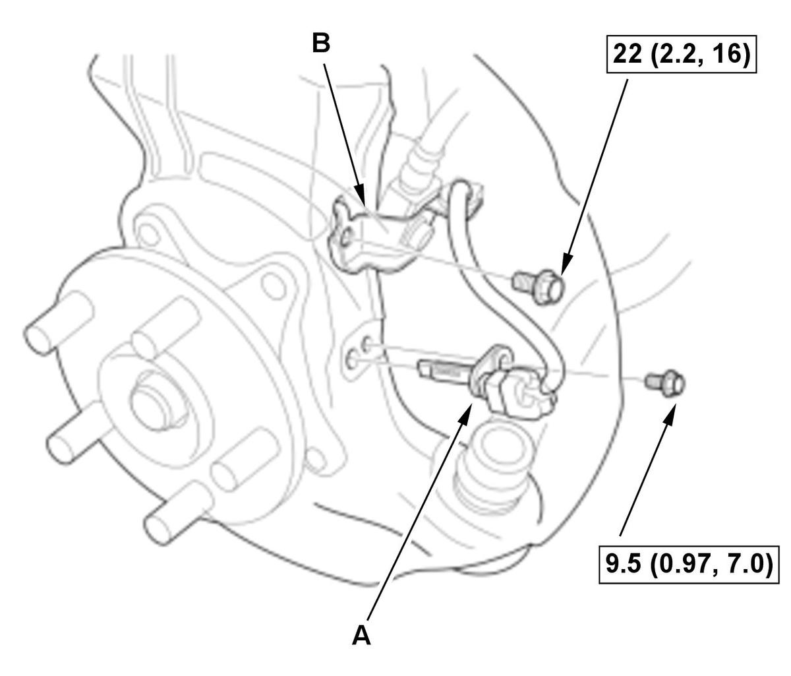
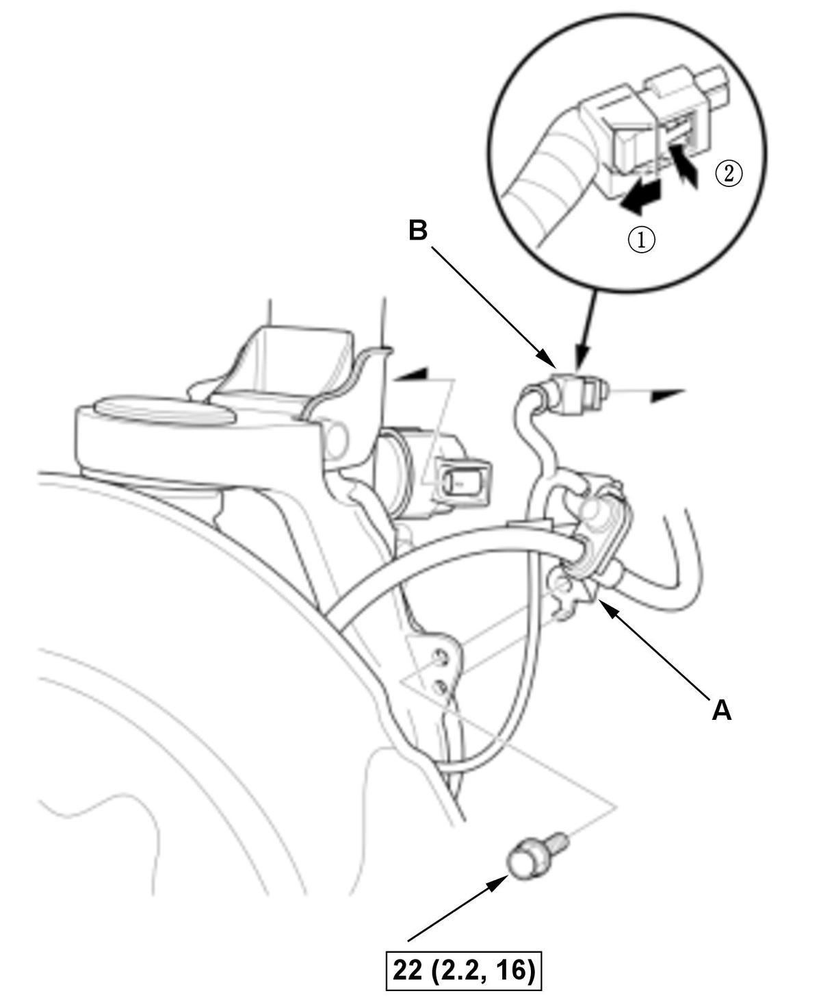
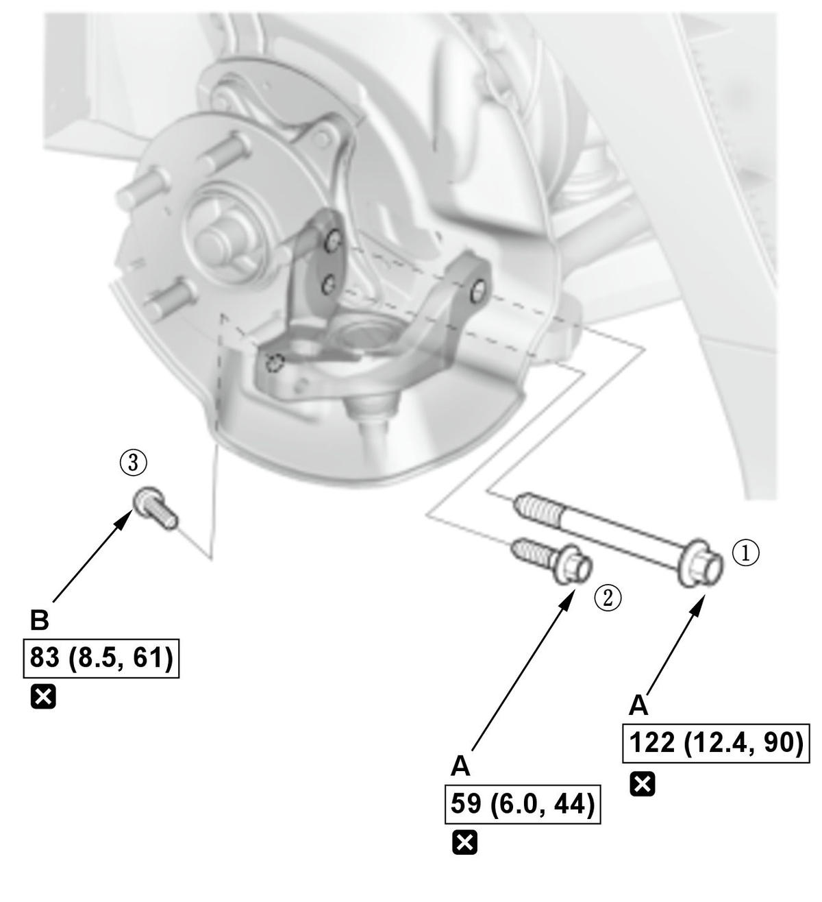
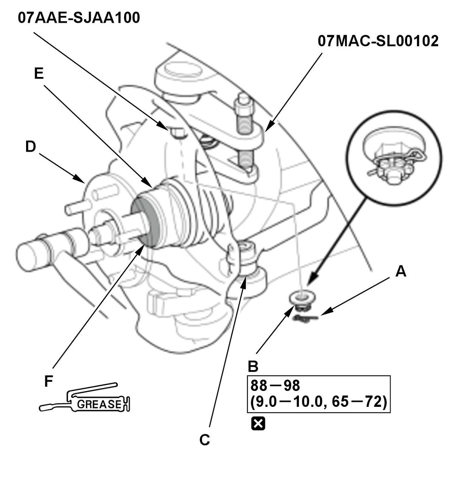
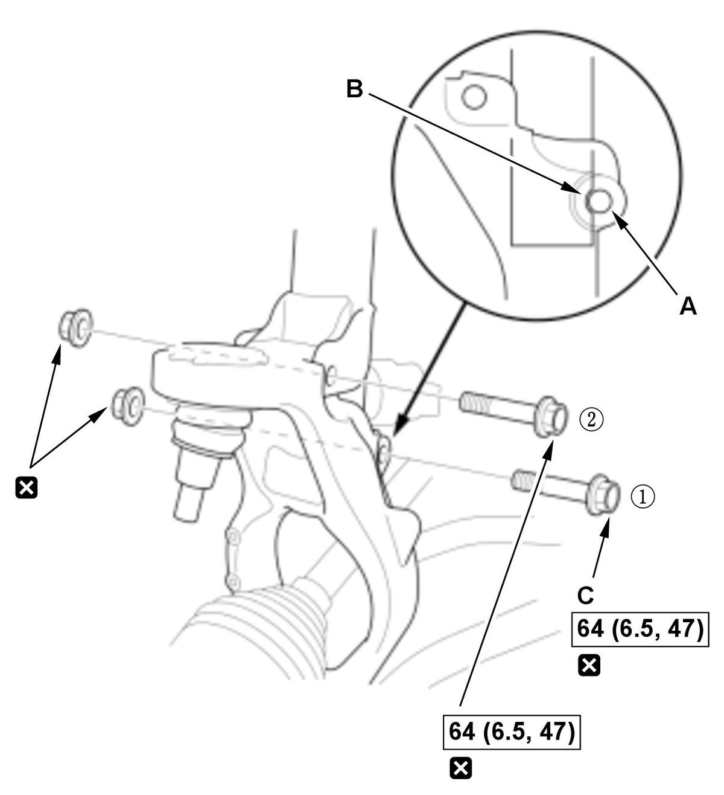
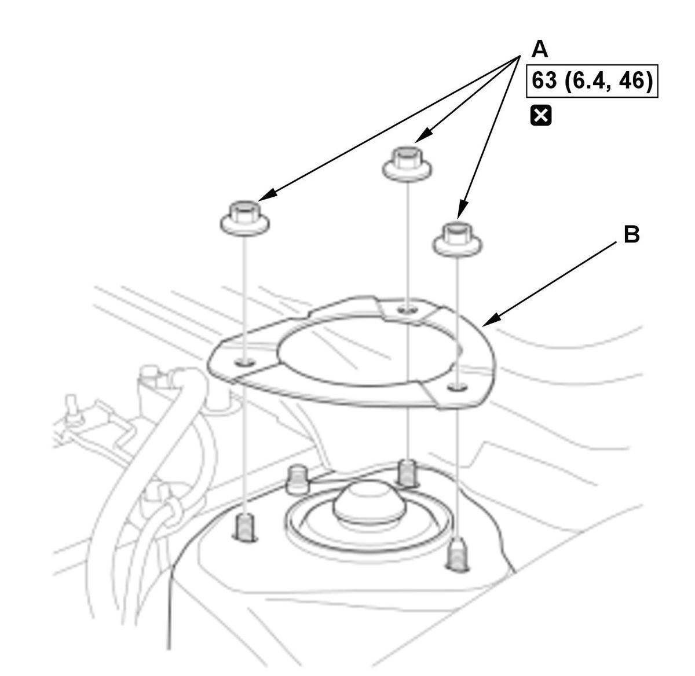

Removal and Installation
NOTE: How to read the torque specifications .
- Vehicle - Lift
- Front Wheel - Remove
- Front Brake Caliper - Remove
- Brake Disc - Remove
- Spindle Nut - Remove
- Damper/Spring Items - RemoveFig 1: Front Wheel Speed Sensor And Brake Hose Bracket Components With Torque Specifications (Type-R - 2017-21)

Courtesy of HONDA, U.S.A., INC.1. Remove the wheel speed sensor (A). 2. Remove the brake hose bracket (B).
Fig 2: Front Brake Hose Bracket And Connector Components With Torque Specifications (Type-R - 2017-21)
Courtesy of HONDA, U.S.A., INC.3. Remove the brake hose bracket (A). 4. Disconnect the connector (B) as shown.
- Stabilizer Link - Disconnect
1. Disconnect the stabilizer link from the front damper . - Front Suspension Stroke Sensor - Disconnect
1. Disconnect the front suspension stroke sensor from the lower arm . - Stopper Link - Remove
1. Disconnect the stopper link from the damper fork . - Knuckle/Hub Bearing Unit Assembly - RemoveFig 3: Front Knuckle/Hub Bearing Unit Assembly Components With Tightening Sequence And Torque Specifications (Type-R - 2017-21)

Courtesy of HONDA, U.S.A., INC.1. Remove the mounting bolts (A) and the TORX bolt (B).
NOTE: During installation, note these items.- Use the new mounting bolts and the TORX bolt.
- Loosely install the TORX bolt, then tighten the mounting bolts and the TORX bolt in the numbered sequence shown.
2. Move the lower arm downward and disconnect the knuckle ball joint (A) from the housing bracket (B). Fig 4: Front Knuckle/Hub Bearing Unit Assembly Components With Torque Specifications (Type-R - 2017-21)
Courtesy of HONDA, U.S.A., INC.3. Remove the lock pin (A). NOTE: During installation, install the lock pin as shown after tightening the new castle nut.
4. Remove the castle nut (B).
NOTE: During installation, note these items.
- Use a new castle nut.
- Torque the castle nut to the lower torque specification, then tighten it only far enough to align the slot with the ball joint pin hole. Do not align the castle nut by loosening it.
NOTE:
- Be careful not to damage the ball joint boot when installing the ball joint remover.
- During installation, note these items.
-
- Be careful not to damage the ball joint boot when connecting the knuckle.
- Before connecting the ball joint, degrease the threaded section and the tapered portion of the ball joint pin, the ball joint connecting hole, the threaded section, and the mating surfaces of the castle nut.
6. Disconnect the tie-rod end ball joint (C).
7. Pull the knuckle/hub bearing unit (D) outward, and separate the outboard joint (E) from the hub using a soft face hammer, then remove the knuckle/hub bearing unit.
NOTE:
- Do not pull the driveshaft end outward. The inner driveshaft inboard joint may come apart.
- During installation, apply specified grease to the contact area (F) of the outboard joint and the hub bearing unit .
- Damper Fork - RemoveFig 5: Front Damper Fork Components With Tightening Sequence And Torque Specifications (Type-R - 2017-21)

Courtesy of HONDA, U.S.A., INC.NOTE: During installation, note these items.
- Use new damper fork mounting bolts and the new flange nuts.
- Align the bolt hole (A) on the damper fork with the groove (B) on the damper unit as shown.
- Tighten the mounting bolts in the numbered sequence shown, then retighten the lower mounting bolt (C).
- Damper/Spring - Remove

Courtesy of HONDA, U.S.A., INC.1. Remove the flange nuts (A).
NOTE:- Do not let the damper/spring drop down under its own weight.
- Use the new flange nuts during reassembly.
2. Remove the damper plate (B).
3. Remove the damper/spring (A).
NOTE:- Be careful not to damage the body.
- During installation, if the guide pin (B) is equipped, align the guide pin with the body hole (C).
- All Removed Parts - Install
1. Install the parts in the reverse order of removal. - Brake System - Bleed
- Wheel Alignment - Check